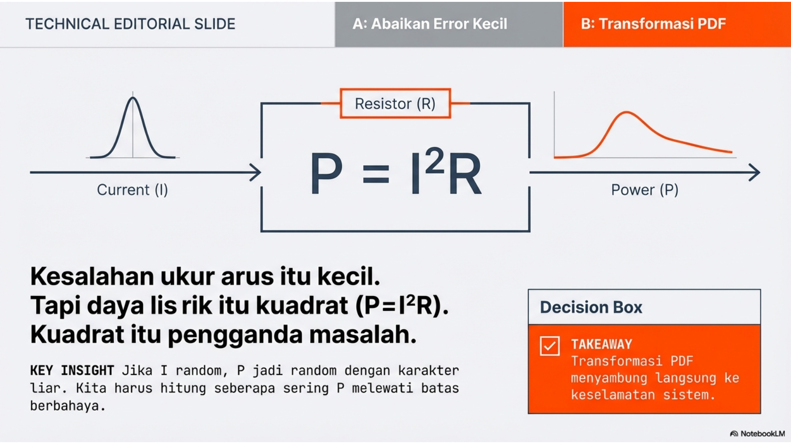

Function of Random Variables, PDF of new random variable

“Kesalahan ukur arus itu kecil. Tapi daya listrik P = I²R. Kuadrat itu pengganda masalah. Jadi, kalau I random, P jadi random dengan karakter berbeda. Hari ini kamu belajar trik penting: kalau Y = g(X), bagaimana distribusi Y? Ini skill yang sering dipakai untuk batas toleransi keamanan komponen. Kita mau jawab: seberapa sering P melewati batas berbahaya? Ini statistik yang langsung nyambung ke keselamatan.”
Week 09: Fungsi Variabel Acak dan Distribusi Bivariat
10.1 Agenda Perkuliahan Minggu 9
Topik: Fungsi Variabel Acak & Distribusi Bivariat Tema Misi: “Metamorphosis of Data: How Input Noise Becomes Output Risk”
10.1.1 Pertemuan 1: Senin (1 Jam) - The Intuition & The Warp
Fokus: Memahami bagaimana fungsi matematika mengubah bentuk distribusi data (Transformasi) dan hubungan antar dua variabel.
00:00 - 00:10 | The Hook: “The Flaw of Averages 2.0”
Masalah: “Jika arus listrik (I) rata-rata 10 Ampere (Normal), apakah Daya (\(P=I^2R\)) juga berdistribusi Normal?”
Visual: Tunjukkan animasi input kurva lonceng yang melewati fungsi kuadrat, menghasilkan output yang “miring” (skewed).
Poin: Fungsi non-linear “memelintir” distribusi. Menggunakan rata-rata input saja untuk menghitung rata-rata output seringkali salah (\(E[X^2] \neq (E[X])^2\)).
00:10 - 00:30 | Live Demo: “Joint Distribution & Correlation”
Dosen (Python): Generate dua variabel acak (misal: Server Load vs Latency).
Visualisasi: Gunakan seaborn.jointplot untuk menampilkan Joint PDF (peta kontur) dan Marginal PDF (histogram di pinggir).
Konsep: Independen vs Berkorelasi. Tunjukkan bagaimana awan data menjadi “gepeng” saat korelasi tinggi.
00:30 - 00:50 | Konsep: Transformasi Variabel
Metode CDF: \(F_Y(y)=P(g(X) \le y)\).
Propagasi Ketidakpastian (Intro): Bagaimana noise pada sensor suhu merambat menjadi error pada prediksi cuaca.
00:50 - 01:00 | Pod Formation & Mission Brief
Misi GitHub: “The Uncertainty Architect”. Mahasiswa harus memodelkan risiko sistem yang bergantung pada dua input acak yang saling berkorelasi.
01:10 - 01:40 | Studi Kasus: Transformasi Skor ML (Logits to Probability)
Membahas Aplikasi 11: Bagaimana mengubah raw score dari model regresi linear (\(-\infty, \infty\)) menjadi probabilitas (0,1) menggunakan fungsi Sigmoid. Analisis dampaknya terhadap threshold keputusan.
01:40 - 01:50 | Showcase
Pods mempresentasikan grafik Joint Plot mereka dan strategi mitigasi risiko overload.
01:50 - 02:00 | Exit Ticket
Pertanyaan: “Jika X dan Y independen, apa yang terjadi dengan Kovariansinya? Apakah sebaliknya berlaku?”
10.2 Materi Kuliah: Konsep, Aplikasi, & Komputasi
10.2.1 1. Konsep Dasar
Variabel Acak Bivariat: Pasangan (X,Y) dengan Joint PDF \(f(x,y)\). Peluang dihitung sebagai volume di bawah permukaan \(f(x,y)\).
Marginal PDF: Distribusi X sendirian, didapat dengan “membuang” (mengintegralkan) Y. \[ f_X(x) = \int_{-\infty}^{\infty} f(x,y)dy \]
Independensi: X dan Y independen jika dan hanya jika \(f(x,y) = f_X(x) \cdot f_Y(y)\).
Transformasi Variabel (Y=g(X)): Jika \(y=g(x)\) monoton, PDF baru dapat dicari dengan: \[ f_Y(y) = f_X(g^{-1}(y)) \left| \frac{d}{dy}g^{-1}(y) \right| \] Namun, pendekatan simulasi (Monte Carlo) lebih disukai di IT untuk fungsi kompleks.
10.2.2 2. Aplikasi Sistem Informasi
Propagasi Error (FOSM): Mengestimasi variansi output model (Y) berdasarkan variansi input (X). Misal: Prediksi bandwidth (Y) berdasarkan jumlah user (X) yang estimasinya punya error.
Load Balancing: Menganalisis distribusi beban gabungan pada dua server. Jika beban server A tinggi, apakah beban server B cenderung tinggi juga? (Korelasi positif buruk untuk redundansi).
Machine Learning: Transformasi fitur (misal: Log-transform pada data skewed seperti income atau latency) agar lebih mendekati Normal sebelum dilatih.
10.2.3 3. Komputasi (Python)
Multivariate Normal:np.random.multivariate_normal(mean, cov, size) untuk membangkitkan data berkorelasi.
Correlation Matrix:np.corrcoef(x, y) atau df.corr().
Visualisasi:seaborn.jointplot(kind='kde') atau kind='hex' untuk melihat densitas gabungan.
10.3 Tugas Kelompok (GitHub Classroom)
Judul: Week 9 Mission: The Risk Propagator
Deskripsi: Mahasiswa menganalisis risiko finansial cloud computing. Biaya total bulanan bergantung pada Storage Used (GB) dan Compute Hours (CPU), di mana keduanya adalah variabel acak yang tidak pasti dan berkorelasi.
Set Soal (Notebook): 1. Data Generation (25 poin): - Buat 10.000 sampel data bivariat (S,C) dimana S (Storage) dan C (Compute) memiliki korelasi \(\rho=0.7\). - Tampilkan Joint Plot untuk membuktikan korelasi. 2. Transformation (25 poin): - Fungsi Biaya: \(Cost = 0.1 \times S + 0.5 \times C + 0.01 \times (S \times C)\) (Termasuk biaya transfer data interaksi \(S \times C\)). - Hitung array Cost dan plot histogramnya. 3. Analytical Check (20 poin): - Hitung Mean dan Variansi dari Cost secara empiris. - Bandingkan dengan properti ekspektasi: \(E[S+C] = E[S] + E[C]\). Apakah \(E[S \times C] = E[S] \times E[C]\)? (Hint: Ingat korelasi). 4. Decision Making (30 poin): - Tentukan Budget bulanan agar peluang Overbudget \(\le 5\%\). - Apa yang terjadi dengan risiko Overbudget jika kita berhasil membuat S dan C menjadi independen (\(\rho=0\))? Simulasikan dan jelaskan.
10.4 15 Soal & Solusi
10.4.1 A. Pertanyaan Konseptual
Soal: Apa yang dimaksud dengan fungsi padat probabilitas gabungan (joint PDF) dan bagaimana cara mendapatkan PDF marginal darinya?
Solusi: Joint PDF \(f(x,y)\) mendeskripsikan peluang densitas bahwa variabel acak X bernilai x DAN Y bernilai y secara bersamaan. PDF marginal (misal \(f_X(x)\)) didapatkan dengan “menjumlahkan” (mengintegralkan) peluang gabungan terhadap seluruh kemungkinan nilai variabel lainnya (Y). Rumusnya: \(f_X(x) = \int_{-\infty}^{\infty} f(x,y)dy\).
Soal: Jelaskan konsep independensi antara dua variabel acak dalam konteks fungsi probabilitas gabungan.
Solusi: Dua variabel acak X dan Y dikatakan independen jika dan hanya jika fungsi densitas gabungan mereka dapat difaktorkan menjadi perkalian fungsi densitas marginal masing-masing untuk setiap x dan y. Secara matematis: \(f(x,y) = f_X(x) \cdot f_Y(y)\).
Soal: Apa perbedaan antara kovariansi dan korelasi dalam mengukur hubungan antara dua variabel?
Solusi: Kovariansi mengukur arah hubungan linear (positif/negatif) tetapi nilainya bergantung pada satuan data (misal: meter vs cm). Korelasi (Pearson) adalah versi kovariansi yang dinormalisasi (dibagi standar deviasi masing-masing), sehingga nilainya selalu antara -1 hingga +1 dan bebas dimensi, menunjukkan kekuatan dan arah hubungan linear.
Soal: Bagaimana teknik transformasi variabel digunakan untuk menemukan distribusi dari \(Y=X^2\)?
Solusi: Jika X adalah variabel acak dengan PDF \(f_X(x)\), distribusi \(Y=X^2\) tidak bisa langsung didapat dengan mengkuadratkan PDF. Kita harus menggunakan metode perubahan variabel yang melibatkan turunan fungsi invers (Jacobian). Untuk \(Y=X^2\), kita perlu memperhitungkan bahwa dua nilai X (+x dan -x) memetakan ke satu nilai Y.
Soal: Jelaskan konsep ekspektasi kondisional \(E[Y|X]\) dan kegunaannya dalam prediksi sederhana.
Solusi:\(E[Y|X=x]\) adalah rata-rata nilai Y ketika kita tahu bahwa X bernilai x. Ini adalah dasar dari regresi dan prediksi. Dalam konteks prediksi, \(E[Y|X]\) adalah “tebakan terbaik” (prediktor yang meminimalkan MSE) untuk nilai Y jika informasi X tersedia.
10.4.2 B. Pertanyaan Aplikatif
Soal: Analisis hubungan antara latensi jaringan (X) dan ukuran paket (Y) pada server cloud.
Solusi: Kita memodelkan (X,Y) sebagai distribusi bivariat. Biasanya terdapat korelasi positif: paket yang lebih besar (Y tinggi) cenderung menyebabkan latensi lebih tinggi (X tinggi) karena waktu transmisi dan pemrosesan. Analisis Joint PDF membantu mendeteksi anomali, misal paket kecil tapi latensi tinggi (indikasi congestion).
Soal: Jika X dan Y adalah waktu proses di dua server independen, tentukan distribusi dari waktu total \(T=X+Y\).
Solusi: Karena independen, PDF dari jumlah \(T=X+Y\) adalah konvolusi dari PDF X dan PDF Y: \(f_T(t) = \int f_X(x)f_Y(t-x)dx\). Jika keduanya Normal, T juga Normal.
Soal: Hitung korelasi antara jumlah jam belajar mahasiswa STI dan nilai ujian akhir mereka berdasarkan data sampel.
Solusi: Gunakan rumus korelasi sampel Pearson: \(r = \frac{\sum(x_i-\bar{x})(y_i-\bar{y})}{\sqrt{\sum(x_i-\bar{x})^2 \sum(y_i-\bar{y})^2}}\). Nilai mendekati +1 menunjukkan hubungan linear positif kuat.
Soal: Tentukan probabilitas gabungan bahwa sebuah request database memakan waktu \(< 10\) ms DAN ukuran hasilnya \(> 1\) MB.
Solusi: Kita perlu mengintegralkan Joint PDF \(f(t,s)\) pada daerah \(0 < t < 10\) dan \(s > 1\). \(P(\text{Cepat & Besar}) = \int_{1}^{\infty} \int_{0}^{10} f(t,s) \, dt \, ds\).
Soal: Evaluasi efektivitas algoritma load balancing dengan menganalisis distribusi bivariat beban pada dua node server.
Solusi: Idealnya, beban pada Node A dan Node B harus memiliki korelasi negatif atau nol jika balancer bekerja sempurna membagi beban. Jika korelasinya positif tinggi (keduanya naik/turun bersamaan), berarti sistem rentan terhadap lonjakan trafik global (common mode failure) dan balancer mungkin hanya membagi rata, bukan menyeimbangkan secara dinamis.
10.4.3 C. Pertanyaan Komputasional
Soal: Gunakan numpy untuk menghitung matriks kovariansi dan matriks korelasi dari dataset bivariat.
Solusi:
import numpy as np data = np.array([[9, 10], [11, 12], [13, 14]]) # Kolom X, Kolom Y cov_matrix = np.cov(data, rowvar=False) corr_matrix = np.corrcoef(data, rowvar=False) print("Cov:\n", cov_matrix) print("Corr:\n", corr_matrix)
Soal: Visualisasikan distribusi gabungan dua variabel acak menggunakan jointplot dari pustaka seaborn.
Solusi:
import seaborn as sns, pandas as pd, numpy as np data = pd.DataFrame({'X': np.random.randn(100), 'Y': np.random.randn(100)}) sns.jointplot(data=data, x='X', y='Y', kind='kde') # Menampilkan kontur densitas
Soal: Implementasikan fungsi untuk menghitung PDF marginal secara numerik dari tabel probabilitas gabungan diskrit.
Solusi:
import numpy as np # Tabel P(X,Y): Baris=X, Kolom=Y joint_prob = np.array([[0.1, 0.2], [0.3, 0.4]]) marginal_X = np.sum(joint_prob, axis=1) # Jumlahkan per baris print("P(X):", marginal_X) # Output: [0.3, 0.7]
Soal: Simulasikan distribusi dari jumlah dua variabel acak Uniform yang independen dan tunjukkan konvergensinya ke bentuk segitiga.
Solusi:
import matplotlib.pyplot as plt x = np.random.uniform(0, 1, 10000) y = np.random.uniform(0, 1, 10000) z = x + y plt.hist(z, bins=30, density=True) plt.title("Sum of 2 Uniforms = Triangle") plt.show()
Soal: Tulis skrip untuk melakukan transformasi variabel acak menggunakan metode invers transformasi CDF.
Solusi:
# Contoh: Transformasi Uniform(0,1) ke Eksponensial(lambda=1) # F(x) = 1 - e^-x => x = -ln(1-u) u = np.random.uniform(0, 1, 1000) x_exp =-np.log(1- u) plt.hist(x_exp, bins=20); plt.show()
10.5 1. Konsep Pengetahuan
Menentukan distribusi probabilitas dari variabel baru Y yang merupakan fungsi dari variabel acak X (misal Y = g(X)).
10.6 2. Tipikal Problem
Diketahui distribusi kesalahan pengukuran arus listrik (X). Bagaimana distribusi kesalahan daya listrik (P), jika P = I^2 * R?
10.7 3. Solusi & Pengambilan Keputusan
Menggunakan metode transformasi atau fungsi pembangkit momen untuk menurunkan PDF dari P. Ini penting bagi insinyur untuk menentukan batas toleransi keamanan komponen agar tidak terbakar akibat fluktuasi daya.
10.8 4. Eksplorasi Komputasi (Python)
Gunakan sel di bawah ini untuk mengimplementasikan simulasi atau penyelesaian masalah di atas menggunakan Python.
Lihat kode
# Tulis kode Python Anda di siniimport numpy as npimport pandas as pdimport matplotlib.pyplot as pltimport scipy.stats as statsprint("Siap untuk komputasi Minggu 09!")
Siap untuk komputasi Minggu 09!
Source Code
---title: "Minggu 09: Fungsi Variabel Acak"subtitle: "Function of Random Variables, PDF of new random variable"---{{< include ../agenda/w09.qmd >}}## 1. Konsep PengetahuanMenentukan distribusi probabilitas dari variabel baru Y yang merupakan fungsi dari variabel acak X (misal Y = g(X)).## 2. Tipikal ProblemDiketahui distribusi kesalahan pengukuran arus listrik (X). Bagaimana distribusi kesalahan daya listrik (P), jika P = I^2 * R?## 3. Solusi & Pengambilan KeputusanMenggunakan metode transformasi atau fungsi pembangkit momen untuk menurunkan PDF dari P. Ini penting bagi insinyur untuk menentukan batas toleransi keamanan komponen agar tidak terbakar akibat fluktuasi daya.## 4. Eksplorasi Komputasi (Python)*Gunakan sel di bawah ini untuk mengimplementasikan simulasi atau penyelesaian masalah di atas menggunakan Python.*```{python}# Tulis kode Python Anda di siniimport numpy as npimport pandas as pdimport matplotlib.pyplot as pltimport scipy.stats as statsprint("Siap untuk komputasi Minggu 09!")```